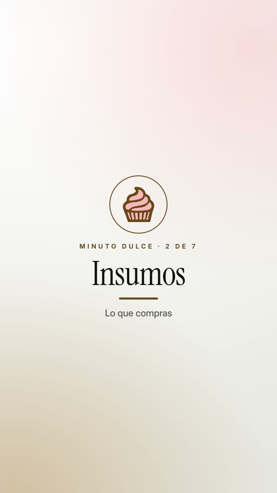
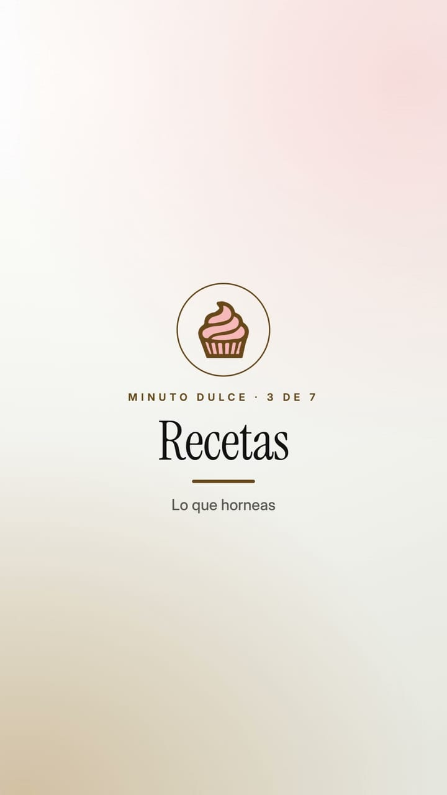
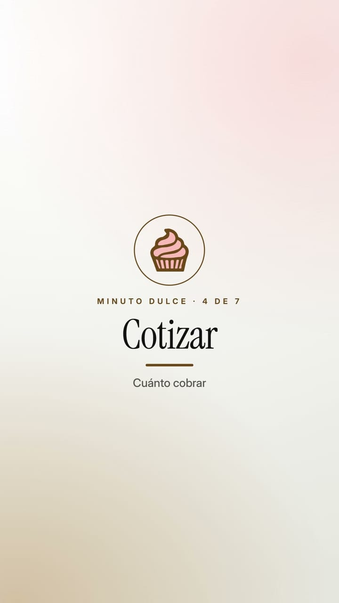
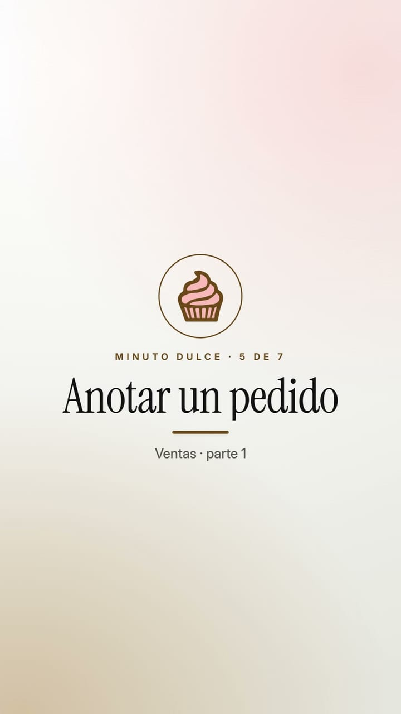
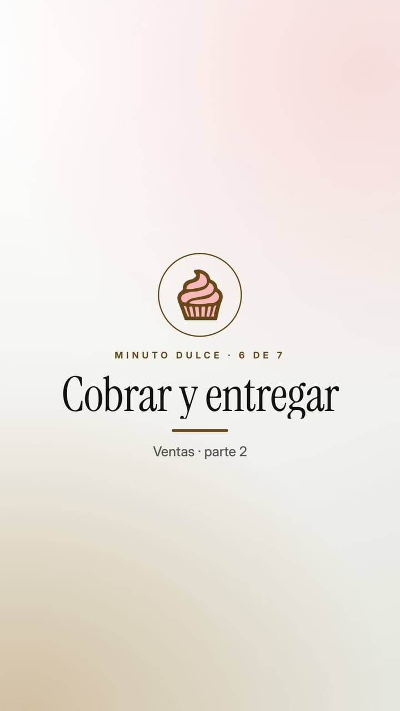

Cómo construí una app completa dirigiendo agentes en vez de escribir código — lo que salió, lo que costó y el plan que me dejó.





?next= que al normalizarse quedaba como //otro-dominio
redirección abierta
Siguiente paso: convertir el playbook en skills —/kickoff y /retro— después de un segundo proyecto.